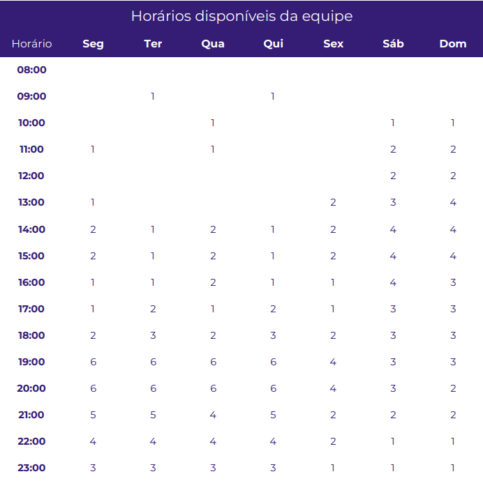

Planejamento
1. Aplicativos Analisados
Arthur Henrique - Carteira Digital
Alex Gabriel - Agendamentos
Christian Fleury - MEI
Matheus Costa - Detran-DF
Paulo Henrique - ConecteSuS
Thiago Gomes - Carteira Digital
2. Metodologia
2.1. Extreme Programming (XP)
É uma metodologia ágil com foco em agilidade de equipes e qualidade de projetos, apoiada em valores como simplicidade, comunicação, feedback e coragem que nos submetem ao reconhecimento de que XP é uma metodologia baseada em comportamentos e atitudes. Dessa forma, ela propicia que o projeto seja executado dentro do prazo e do orçamento, fazendo então com que o cliente fique satisfeito e a equipe de desenvolvimento não "fique maluca" por causa do projeto.
2.2. Sprints Semanais
O projeto utilizará de Sprints semanais. No total teremos 14 Sprints, podendo ser maiores ou menores de acordo com o nível de demanda, e ao final de cada uma será realizada uma avaliação.
2.3. Revisão por pares (Pull Requests)
Será utilizada a metodologia de Revisão por Pares, ou seja, após uma abertura de Pull Request (PR), ao menos dois membros da equipe revisarão as alterações contidas na branch ao qual se deseja realizar a operação de merge. Essa revisão se torna essencial ainda mais ao final das Sprints, em que a solicitação do PR se dará entre a branch de desenvolvimento (no nosso caso "dev") e a branch mais estável "main", contribuindo com uma maior segurança contra possíveis problemas inseridos no projeto principal.
2.4. Git Work-Flow
É um fluxo de trabalho baseado em Branchs onde as implantações são feitas regularmente. Cada unidade de trabalho, seja um bug ou uma feature, é feita através de uma branch criada a partir da main. Depois que o trabalho é concluído na branch, ele é revisado e testado antes de realizar o merge na main e enviado à produção.
3. Cronograma geral
Abaixo segue a tabela de planejamento do cronograma de atividades gerais:
| Título | Descrição | Data |
|---|---|---|
| Pré-Rastreabilidade | Planejamento e RichPicture | 09/06 - 21/06 |
| Elicitação de requisitos | Técnicas e priorização | 22/06 - 29/06 |
| Modelagem de requisitos - inicial | Cenários, léxico | 30/07 - 07/07 |
| Modelagem de requisitos - tradicional | Casos de uso e Especificação Suplementar | 08/07 - 12/07 |
| Modelagem de Requisitos - Ágil | Histórias de Usuário e Backlogs | 13/07 - 19/07 |
| Modelagem de Requisitos - Intencional ou Orientada à Meta | NFR Framework | 20/07 - 09/08 |
| Análise de Requisitos | Verificação e validação | 10/08 - 16/08 |
| Pós-Rastreabilidade | Gerência de Desenvolvimento de Software orientada à baseline de Requisitos | 17/08 - 23/08 |
Tabela 1: Cronograma geral
4. Tabela de atividades
Abaixo seguem tabelas de atividades de acordo com suas reespectivas sprints:
Sprint 1
| Tarefas | Responsável | Revisor | Entrega Prevista |
|---|---|---|---|
| Criação do documento "Sobre o projeto" | Arthur Henrique | Thiago Siqueira | 20/06 |
| Rich Picture | Alex Gabriel e Matheus Costa | Paulo Henrique | 20/06 |
| Implantação do GitHub Pages | Paulo Henrique | Arthur Henrique | 25/06 |
| Criação do cronograma | Alex Gabriel | Christian Fleury | 28/06 |
| Descrição das ferramentas utilizadas | Christian Fleury | Matheus Costa | 28/06 |
| Criação do documento "Metodologias" | Todos | Todos | 28/06 |
| Gravação da apresentação 1 | Todos | Todos | 29/06 |
Tabela 2: Sprint 1
Sprint 2
| Tarefas | Responsável | Revisor | Entrega Prevista |
|---|---|---|---|
| Correções primeira entrega | Todos | Todos | 07/07 |
| Criação do documento de personas | Alex Gabriel e Paulo Henrique | Thiago Siqueira | 11/07 |
| Questionário | Arthur Henrique | Paulo Henrique | 11/07 |
| Introspecção | Christian Fleury | Arthur Henrique | 11/07 |
| Brainstorming | Todos | Todos | 11/07 |
| MoSCoW | Thiago Siqueira e Matheus Costa | Christian Fleury e Alex Gabriel | 11/07 |
| Gravação da apresentação 2 | Todos | Todos | 12/07 |
Tabela 3: Sprint 2
5. Horários disponíveis dos integrantes
Na seguinte tabela está representada a disponibilidade dos integrantes de acordo com cada horário, essa tabela tem o objetivo de determinar os melhores horários para reunião entre a equipe.

Tabela 4: Horários disponíveis
Planilha com os horários de cada integrante disponível aqui.
6. Ferramentas Utilizadas
Abaixo segue a tabela com a relação das ferramentas utilizadas, pelo nossa equipe, no projeto:
| Ferramenta | Nome | Descrição |
|---|---|---|
| DetranDf | Com o DetranDF é possível realizar diversos serviços a partir do celular. Nessa versão o cidadão poderá consultar várias informações sobre a sua Habilitação, seus Veículos, gerar seu CRLV Digital e muito mais. | |
| Discord | Plataforma de comunicação para chamadas de áudio, vídeo e compartilhamento de tela | |
 |
Google Docs | Ferramenta para criação de documentos simultaneamente entre os integrantes |
 |
Google Sheets | Ferramenta para criação de planilhas simultaneamente entre os integrantes |
 |
GitHub | Plataforma de versionamento em que iremos armazenar todos os arquivos relacionados ao projeto |
 |
Microsoft Office 365 | Versão online do Microsoft Office |
 |
Ferramenta de comunicação instantânea entre os integrantes | |
 |
VSCode | Editor de código destinado ao desenvolvimento de aplicações com controle Git incorporado |
 |
PyCharm | Ambiente de desenvolvimento destinado ao desenvolvimento de aplicações com controle Git incorporado |
 |
Microsoft Teams | Plataforma usada para a gravação dos vídeos de apresentação do projeto |
Tabela 5: Ferramentas utilizadas
Referências
Extreme Programming – Conceitos e Práticas. Disponível em: https://www.devmedia.com.br/extreme-programming-conceitos-e-praticas/1498
Acesso em: 28 de junho de 2022Git Workflow: o que é e principais tipos. Disponível em: https://www.zup.com.br/blog/git-workflow#:~:text=O%20Git%20Workflow%20é%20uma,boa%20opção%20para%20sua%20equipe
Acesso em 28 de junho de 2022
Histórico de Versão
| Versão | Data | Descrição | Autor | Revisor |
|---|---|---|---|---|
| 28/06/2022 | Criação da página | Alex e Christian | Matheus | |
| 29/06/2022 | Adição da metodologia | Todos | Todos | |
| 29/06/2022 | Adição das ferramentas | Christian | Matheus | |
| 05/07/2022 | Correção do cronograma | Alex | Arthur | |
| 12/07/2022 | Ajustes legendas tabelas e layout | Paulo | Todos |